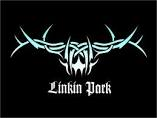

alan.drug97@hotmail.com

Banda originaria de Estados Unidos y su genero es el nu metal y rapcore, premiada a lo largo de su carrera con distintos galardones entre los que destacan varios premios Grammy.
Los comienzos de la banda se remontan a un pequeño estudio del MC/vocalista Mike Shinoda, donde él y Brad Delson grabaron el primer material de la banda en 1996. Los dos habían ido juntos al instituto, donde conocieron al baterista del grupo, Rob Bourdon. Shinoda contactó con el DJ Joe Hahn cuando estudiaba ilustración en el Art Center College de Pasadena.Mientras tanto, en la UCLA, Delson compartió apartamento con el bajista Dave Farrell, quien dejó la banda después de los estudios, ya que estaba comprometido con su otra formación, The Snax, y regresó un año más tarde. En ese momento, se denominaban Xero y grabaron varios demos. Nunca consiguieron un contrato y el proyecto no prosperó. Entonces Mike Shinoda decidió contratar un vocalista, y puso un anuncio. Consiguieron a Chester Bennington, natural de Arizona, que comenzó grabando discos cuando tenía 16 años en el grupo Grey Daze. Chester interrumpió su vigésima tercera fiesta de cumpleaños, para ir a grabar su voz sobre los demos que recibió, uno con las canciones interpretadas por otro vocalista, y otra con los tracks instrumentales. Terminó en poco tiempo y llamó al grupo para decirles que estaba terminado, sorprendidos le pidieron que pusiera la grabación en el teléfono. La voz de Chester les impactó tanto que lo convocaron inmediatamente.
Tras la integración de Bennington, el grupo se llamó Hybrid Theory (la idea viene de la mezcla de diferentes estilos que querían unir), sin embargo, debido a un problema de registro del nombre con un grupo llamado Hybrid, se vieron forzados a cambiar de nombre otra vez. Algunas ideas (no comprobadas) que se barajaron fueron Clear, Probing Lagers, Ten PM Stocker (este nombre era solo una broma, Chester lo dijo en una entrevista) y Platinum Lotus Foundation. Bennington sugirió Lincoln Park, por donde pasaba con el coche al volver de los ensayos. Sin embargo el dominio "lincolnpark.com" costaba más de lo que la banda se podía permitir, así que cambiaron la ortografía a Linkin Park.
Trabajando en un sello independiente, la banda grabó el EP llamado Hybrid Theory EP. Compuesto por los temas Carousel, Technique, Step Up, And One, High Voltage y Part of Me.
Después de firmar con Warner Bros. Records en 1999, su primer álbum, Hybrid Theory, se puso a la venta en el año 2000. Fue el disco más vendido en Estados Unidos y Nueva Zelanda en el 2001, con los éxitos One Step Closer, Crawling, Papercut, In The End y Points of Authority. Cabe destacar la ausencia de lenguaje malsonante en el álbum, en contraste con muchas otras canciones de grupos de nu metal.
Linkin Park formó parte del Ozzfest en el 2001, donde estuvieron de gira junto con Marilyn Manson, Slipknot, Crazy Town, Papa Roach, y Disturbed. Linkin Park también creó su propia gira, de nombre Projekt: Revolution, en la que participaron Cypress Hill, Adema, DJ Z-Trip, Xzibit, Mudvayne y Blindside.
Hybrid Theory vendió casi 20 millones de copias, aunque también recibió muchas críticas debido a las letras de las canciónes.
El 30 de julio del año 2002, lanzaron un álbum de remezclas de Hybrid Theory, llamado Reanimation, que incluía entre otros, un remix de la canción Points Of Authority llamado Pts.of.Athrty, el cual sería uno de los videoclips del álbum junto con Frgt/10, el remix de Forgotten.
Este álbum, a pesar de ser remixes del viejo material del grupo, fue "Platinium" en Estados Unidos vendiendo 1.000.000 de copias. También contó con la colaboración de varios artistas como Staind, Korn, Jurassic 5, entre otros.
Debido al éxito que obtuvieron con Hybrid Theory y Reanimation, pasaron bastante tiempo de gira por Estados Unidos, y tuvieron que trabajar para su nuevo álbum en el autobús de la gira. La banda anunció la producción de un nuevo álbum de estudio en Diciembre de 2001, cuyo título sería Meteora (tomado del nombre de una catedral griega). Meteora ofrecía nuevamente rapcore y nu metal, aunque también fueron introducidos en el álbum nuevos sonidos e instrumentos como una flauta japonesa.
El disco fue lanzado el 25 de Marzo de 2003 y vendió más de 800.000 copias en su primera semana. Los sencillos extraídos del álbum fueron Somewhere I Belong, Breaking the Habit, Numb y Faint, que fueron lanzados con sus respectivos videos musicales. El disco vendió 3 millones de copias antes de Octubre de ese mismo año.
El éxito obtenido por la banda con Meteora hizo que formaran parte del festival Projekt Revolution junto con bandas importantes como Mudvayne, Blindside y Xzibit. Además, en 2003, la banda de metal Metallica les invitó a participar junto con ellos y con Limp Bizkit en el Summer Sanitarium Tour 2003.
Meteora ganó varios premios y galardones como el premio MTV a la mejor banda de rock por la canción Somewhere I Belong o los concedidos en 2004 por los Radio Music Awards. Aunque Meteora no fue tan buen disco como Hybrid Theory, consiguió ser el tercer álbum más vendido en 2003 en los Estados Unidos.
La banda tocó por todo el mundo en el Meteora World Tour.
El 30 de noviembre de 2004, Linkin Park lanzaba junto con el rapero Jay-Z un EP de nombre Collision Course, en el que presentaban Mash-Ups (remezclas de dos temas distintos) de canciones de Linkin Park y Jay-Z. Entre ellas se encuentra Numb/Encore, el único sencillo sacado de este álbum, donde podemos encontrar remezclas de una misma canción Numb de Linkin Park y Encore de Jay-Z.
Collision Course debutó en el número 1 en Estados Unidos, pero solo consiguió el puesto 17 en el Reino Unido.
En 2005 decidieron tomarse un descanso. La banda participó junto con Music For Relief en ayudar a los afectados del tsunami sufrido en la India en 2004 y también actuó en el Live 8 junto a Jay-Z.
Mientras tanto, dos de sus componentes prepararon trabajos en solitario: Mike Shinoda, bajo la agrupación Fort Minor lanzó un álbum el 22 de noviembre del 2005 llamado The Rising Tied, y por otro lado Chester que está preparando el primer disco de su proyecto Dead By Sunrise o Snow White Tan, ya que todavía no está decidido el nombre.
Linkin Park intervino en el Summer Sonic Festival de Japón,
los días 12 y 13 de agosto de 2006.
El 6 de marzo de 2007, Mike Shinoda publicó en su MySpace y en el de Linkin Park un post acerca del nuevo álbum, que se va a llamar "Minutes To Midnight", y se espera que sea lanzado el 15 mayo de 2007 en los Estados Unidos, y el 14 de mayo del mismo año en los demás países, aunque en otras fuentes se encuentra que el álbum será lanzado el 8 de mayo[1]. El primer sencillo, que se llama "What I've Done", ha sido lanzado el 2 de abril de 2007. El álbum mostrará un nuevo sonido de la banda. Su productor es Rick Rubin, quien ha trabajado con artistas como Red Hot Chili Peppers, Audioslave, Metallica, Weezer, System of a Down, Limp Bizkit, U2 y muchos otros más.
FRASE DE LINKIN PARK:
"No desprecies a la gente ni la discrimines por dinero por que vale mucho mas que eso"